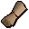

Newcomer map

| Config name | newcomer_map |
| Item id | 550 |
| Value | 1 gp |
| Weight | 18oz |
| Members | No |
| Tradeable | Yes |
| Stackable | No |
| Options | Read |
| Defined in | scripts/general_use/configs/newcomer_map.obj |
Newcomer map
Issued by RuneScape Council to all new citizens.
Sold at
| Shop | Shopkeeper | Stock |
|---|---|---|
| Lumbridge General Store | 5 |
Referenced in scripts
scripts/general_use/scripts/newcomer_map.rs2